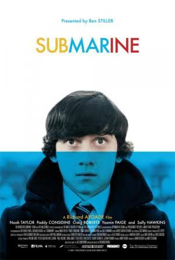
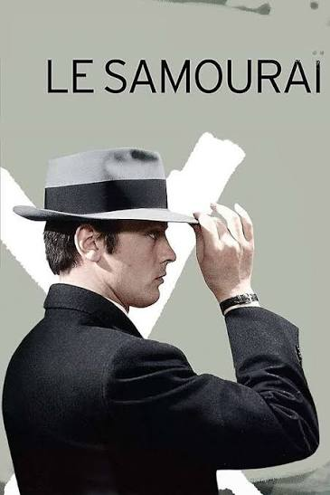
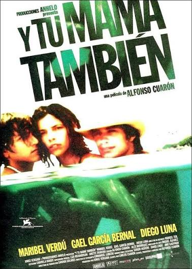
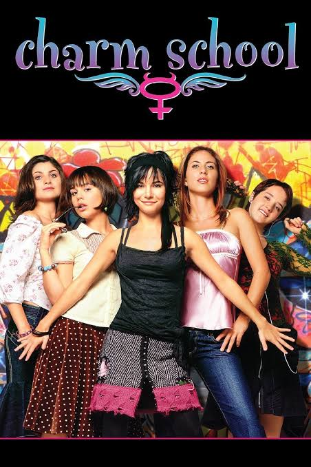
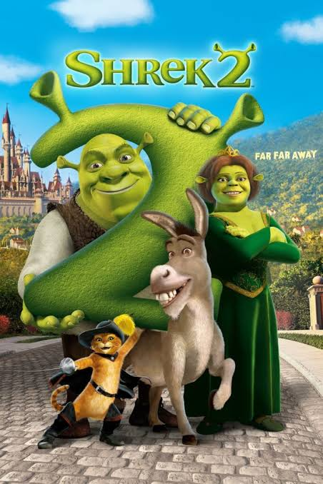
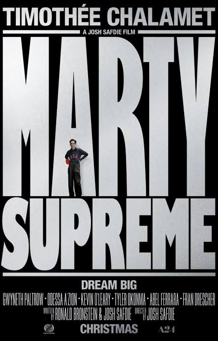

01 — COMING OF AGESubmarine
Humor extraño, primeros amores y esa maravillosa sensación de no saber muy bien qué estás haciendo con tu vida.

02 — CINE FRANCÉSLe Samouraï
Silencios, soledad y una elegancia visual inolvidable. Una película que demuestra que menos puede ser muchísimo más.
La mala educación
Identidades, recuerdos y secretos. Una historia provocadora que juega con la memoria y la ficción.

04 — ROAD MOVIEY tu mamá también
Juventud, amistad y descubrimientos. Un viaje que termina siendo mucho más que un viaje.

05 — COMEDIANiñas mal
Rebeldía, estilo y caos adolescente. Una de esas películas que tienen un encanto muy particular.
Amarte duele
Un romance juvenil atravesado por las diferencias sociales, los prejuicios y las decisiones difíciles.

07 — ANIMACIÓNShrek 2
Porque no todo tiene que ser profundo. A veces una buena película también es la que puedes ver mil veces.

08 — DRAMA / DEPORTEMarty Supreme
Ambición, obsesión y la necesidad de llegar a ser alguien. Una historia con energía y personalidad.
Full Metal Jacket
Una mirada cruda sobre la guerra, la deshumanización y cómo las instituciones pueden transformar a las personas.